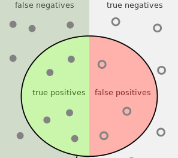

Classification

Jeremy Leipzig
Department of Information Science
College of Computing and Informatics
Drexel University
Common themes
Classifiers allow machines to distinguish between types,
and are trained/evaluated with "gold standard" data
using a variety of "confusion" metrics.
While bad models can make bad classifiers,
it is just as if not more import
to have a "gold standard" truth of highest quality.
data can often be confounded
What is classification?
While modeling might be focused on why something happened,
classification asks "what type of thing is this?"
So, the goal is to categorize individual observations,
e.g., what is the blood type of individual X?
Since target categories are known a-priori,
i.e., existing categorical knowledge is used for guidance,
classification is considered a supervised learning task,
whose unsupervised analogue would be clustering.
Binary classification
The simplest form chooses one of two categories,
abstractly, positive and negative,
like what a SPAM filter does with an in-box.
Naturally, binary classification is easiest to accomplish,
and has the simplest quantification for success,
which is succinctly described by the confusion matrix.
The confusion matrix
"Gold standard," truth-known data allows classifier assessment,
whether for binary or more-complex classification problems,
but the confusion matrix is particular to binary classification,
- For an observation, e.g., an email, there are four outcomes:
-
True positive (TP)—Gmail saved you from a computer virus.
-
False positive (FP)—Sorry, I never got the meeting's message!
-
True negative (TN)—You agreed to attend the meeting.
-
False negative (FN)—Instead of $1 million you got a virus.
A matrix describing classifier confusion

Summarized assessments
Tallying the four outcomes is a coarse assessment,
and it's generally more important to summarize with rates.
Two commonly used rates are precision (P) and recall (R).
Precision is the "positive predictive value,"
and is the probability that a positive prediction is correct,
while recall measures a classifier's "sensitivity",
or the probability of detecting a positive instance.
Sometimes it's important to balance the two,
which is why the combined, F1 score exists:
From description, what kind of an average is this? Why?
What about accuracy?
Amid these summaries we actually haven't mentioned accuracy:
which measure the overall number of correct assessments.
With classifiers, accuracy can unfortunately be misleading
and is generally not the best metric for model tuning.
Estimates hold 1 in 8 women will develop breast cancer,
so a classifier that flatly predicts all women born won't,
will score an 88% accuracy, which is much better than half!
But this is useless, with no positive predictive power,
which is masked by a class imbalance of positives at 12%.
So, metrics should be considered in the context of problems
and it is best to loot at and understand all of them.
Parameter tuning
Most times, classifiers have parameters and can be tuned.
These might be probabilistic thresholds for prediction,
or more physical quantities that describe model nuances.
Combined metrics, like F1, help to choose best parameters,
and the receiver operating characteristic (ROC) curve
plots the True Positive vs False Positive rates.
A perfect model has 100% TPs and 0% FPs,
which is in the top left corner of the ROC, but
the ROC also describes overall model performance
through the Area Under the Curve (AUC),
which has a maximum of 1 for a perfect classifier,
and generally indicates a model's tunability.
Complex classification problems
Binary classification is a powerful and simple framework,
and is extended by multi-class classification,
where there exists more than two labels from which to choose,
as is the case in language classification.
Multi-class is distinct from multi-label classification,
where multiple labels may be applied to individual instances,
e.g., tag blog posts with any of news, sports, politics, etcetera.
Both multi-label and -class have different performance metrics,
and are generally harder to approach than binary classification,
since there are a wider range of possibilities.
Is machine classification objective?
Supervised machine learning algorithms are built on data,
so it may be reasonable to assume that these are objective.
However, an algorithm is only as strong as its data,
which can be incorrect or biased.
This leads to the adage garbage in, garbage out,
which refers to bad input data leading to similar output.
However this is also the case with our cultural biases,
which if present in social data as input
can result in machines that discriminate,
i.e., carry unreasonable cultural biases forward.
Quality data is paramount in classifier construction!
Recap
Classifiers allow machines to distinguish between types,
and are trained/evaluated with "gold standard" data
using a variety of "confusion" metrics.
While bad models can make bad classifiers,
it is just as if not more import
to have a "gold standard" truth of highest quality.
- Next week: Design
-
understanding problem statements and customer needs,
-
planning for an operational environment,
-
and facilitating uptake through interactivity.